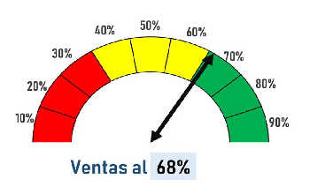
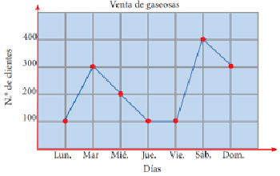
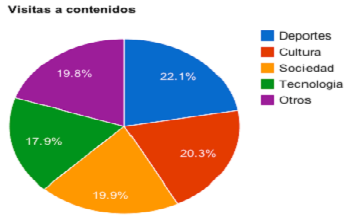

Estadística de los primeros 3 trimestres.

Medidor de ventas en los últimos años.
Medidor Gráfico de unidades vendidas desde 2001 hasta 2008.

Gráfico de la cantidad de Envíos.

Gráfico lineal sobre la cantidad de clientes en la venta de Gaseosas en la última semana
Porcentaje de Visitas a los difentes contenidos disponibles (deportes).
Gráfico circular de colores preferidos.

Gráfico a base de la locación de Recepción de los turistas.

Gráfico circular de los diferentes animales y personas que se encuentran en dicha zona.